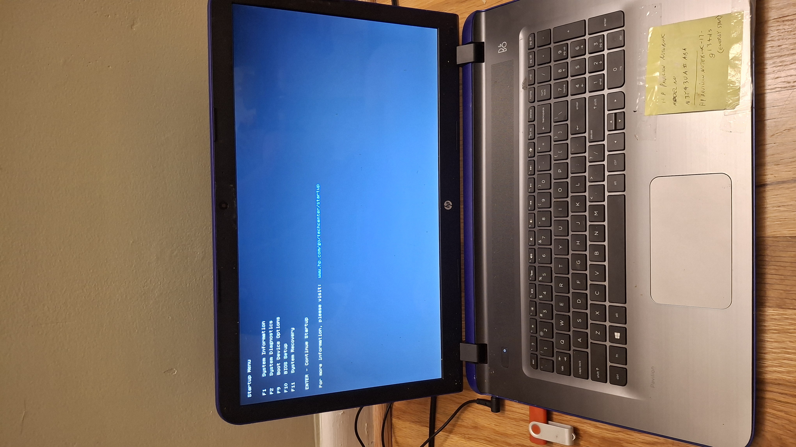
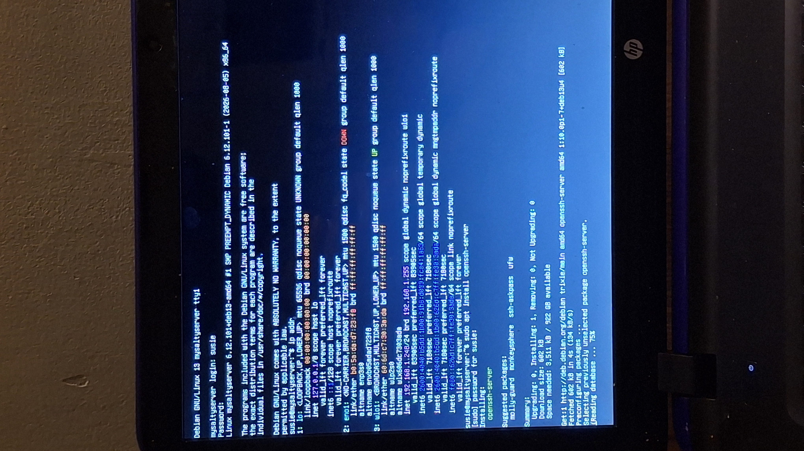

Github: https://github.com/1SUSHANT1/server-setup-guide
This is a project on building a server. This project assumes that you already have HTML files available for your website, and you have already purchased a domain name. If you need help, please visit My Website Initial Configuration, and Domain Registration and DNS configuration.
I have to thank my friend Nyaisa for donating me her broken, prehistoric, obsolete by current standards, can't even boot windows, no charger having, HP Pavillion laptop which, after some repair, will be my subject server in this document, and my standby backup server later.
I'm not lying. The laptop legit couldn't boot into windows. But I have big hopes for it as a server!
The objective of this guide is to build a server capable of hosting a website, serving both static and dynamic content.
First, I downloaded Debian 13 image on my laptop, and wrote the .iso file onto my USB drive.

Then I inserted the USB drive in the HP laptop, and spammed esc button while it was booting to get into the startup menu. Then I chose to boot from my USB drive, completely erased off windows, and installed a minimal Debian environment. Yeah, straight up Debian in Di Bi.

First thing I did was install ssh server with sudo apt install openssh-server. And from now on, we will be SSHing into our server!

Let's SSH into our server!

Now let's start building our server. Here is the plan: Use Secure Copy (SCP) to transfer website files to our server. Then install NGINX (engine x) and have it listen on the ports 80 and 443. Enable port forwarding from the router to our server, and serve the website from NGINX
I used scp to transfer files to our server.

These are all static files necessary for the website. There are no scripts or configurations files here. We will write those in a bit.
For configuring NGINX, we will get help from the official NGINX documentation.
First, let's install NGINX. The official NGINX documentation has a very complex installation guide, do check it out. If you have a reason to install NGINX directly from their repository, do go ahead but I will skip allat and install it from apt. Run sudo apt-get install nginx.

Now, let's configure NGINX. Run nano /etc/nginx/nginx.conf to inspect the configuration file. Notice the line include /etc/nginx/conf.d/*.conf;. It means any configuration files in the /etc/nginx/conf.d/ directory will be included in the nginx.conf file.

So, instead of making modifications to the main configuration file, we will create a new file in the /etc/nginx/conf.d/ directory. Run touch /etc/nginx/conf.d/myWebsite.conf to create a new configuration file.

What now? I don't know how to write a configuration file for NGINX! Ahh.. the official documentaion! Let's check out the Beginner's Guide. Please make sure you read the entire guide.
Let's begin writing the configuration file. The guide says that the server block should be inside the http block. But since the include /etc/nginx/conf.d/*.conf; line was already inside the http block, we can start writing our configuration from the server block. Let's take a look at the section where the guide was talking about location block and try to adapt it.
I adapted the given template almost exactly, just replaced the actual file name, and the path. Now what?

If you have already configured a domain name, you can move along to the next section. If not, please visit: Domain Registration and DNS configuration.
After pointing the domain name to our server's public IP address, we also have to configure the router to send web traffic to our server. To do this, enter ip route on your terminal. The terminal will return: 'Default via' followed by an IP address, which will look like 192.168.1.1. This is your default gateway. Open up a browser and enter this IP address. This will take you to your router's login page. If you know the password(and if it's default, please change it), you can login but if you don't, you can follow the password recovery instructions. After logging in the router, select advanced settings and look for something along the lines of Port Forwarding, Port Mapping, or Firewall Rules. We are trying to find the section which lets us forward a specific traffic to a IP address. In my router, it is under Port forwarding.
Once you are in the Port Forwarding settings, it'll let you add a rule. For the initial configuration, do Application: NGINX(or whatever server you are running), Original Port: 80, Protocol: TCP, Fwd to Addr: yourServer'sIPAddress(you can obtain it by running ifconfig on your server's terminal), fwd to Port: 80, Schedule: Always.

Notice that we are forwarding port 80 traffic, which is the HTTP traffic, to port 80 on the server. HTTP traffic isn't secure because the traffic isn't encrypted, so the browser will throw warnings when someone visits your website. We will fix that in a bit. Let's just make the server accessible via HTTP for now.
Assuming you have a valid domain name pointing to your server's public IP address, and the router port forwarding to your server, type in http://yourdomain.com in the browser.

Hmm.. it says server down. Ah! we got to start the NGINX server first! Run sudo systemctl start nginx to start the server and ss -tlnp to make sure it is listening on the port 80 by default. Then reload the page.

More Hmm... Still no luck. We are looking for something like 'error from nginx server' rather than 'server down'. Maybe it is the firewall. Let's inspect it. Run nano /etc/nftables.conf

Ah ok. The firewall is blocking the traffic. It didn't have the allow rule so it is blocking the traffic using implicit deny. Let's configure it to accept port 80 traffic and restart nginx and see if we can get it working.

Success! (kinda). Now we see the NGINX default page. (Behind the scenes, I had to disable HTTP to HTTPS redirection from Cloudflare). Since I already defined a location on the conf file for the Images directory, let's see if we can load an image. Please make sure the image exists at your server and try accessing it using correct path. I am trying to access https://www.sushantadk.com/Images/RepurposingMyOldPhone/1000042982.jpg.

Ok now we got a 404 not found from NGINX. I double and triple checked the path and it seems correct. I am aware that nginx listens on port 80 from default, but let's seee where is it listening from. Run grep -R "listen.*80" /etc/nginx/

I see the problems. First, the server is listening from a different conf file than I expected. I expected it to listen from the nginx.conf file but it was actually listening from /etc/nginx/sites-enabled/default. Kinda stupid, but I don't judge. Second problem, the listen command should be inside the server block and isn't inherited from http block. I don't like these sites-available and sites-enabled directories so I am going to disable them, make my server block default, and add listen command there.

Success! (kinda). Now we are getting 403 forbidden error instead of 404 not found. I am sure it is because of my user permissions. I will recursively add execute permissions to all the files on my website root directory for others, and try again.

Ok! made it work. I was still getting the 403 error after adding the execute permissions on the website root directory, so I had to go one step above and add execute permissions to my home directory as well and now NGINX can traverse all the way and retreive the image I requested.
Now let's go back to our configuration file and add more paths.

This was new to me but pointing the root directory to 'templates' directory made everything that was static work. I can see why it worked now, because the templates directory had index.html file and it contains locations for everything else. So, I could point NGINX to the templates directory, and the index.html file there would handle the routing. Learn something new everyday I guess! It might not be the same for you but just adding location blocks shouldn't be too difficult.
Update:The webpages weren't loading correctly because the index file was pointing to them. They were being served correctly because they were inside the root directory defined in NGINX. Things like images, and my scripts do requrire a location definiton in the NGINX configuration file since they are outside the root directory. I figured this out when my scripts didn't load. Guess you Don't learn something new everyday. Maybe sometimes old knowledge is better.
We just made our website reachable from the internet! Some things might be missing but this is a good start. We'll fix them (you guessed it) in a bit.
You can actually see a secure connection indicator in your browser's address bar when you visit your website over HTTPS. This is because of the SSL/TLS certificate managed by your domain registrar which secures the connections between the client and the domain server. But until now, there is no SSL/TLS certificate in your server, so the connection between your server and your domain server is not secure. Let's fix that.
I use certbot to obtain and manage certificates on my server. Instructions for installing and using certbot can be found in the certbot official documentation. Let's just follow the instructions on the website for now. If I encounter anything interesting, I will document it here.
When you get to a step where it gives you an option to get a certificate and automatically configure HTTPS, you can just pick that one and save some hassle.

Certbot installed certificates from ACME server which will save me a lot of trouble in the future. (See the trouble at: Security Hardening and Assessment of a Self-Hosted ARM Alpine Linux Web Server). Let's also set up automatic renewal following the instructions.

Now to propery check if the HTTPS configuration is working correctly, you have to configure your domain's security settings to only allow HTTPS connections. In Cloudflare, you can do this by configuring SSL/TLS current encryption mode to Full (or Full Strict if available). Let's do that and try to load our website.

As you can see, both the connections from your browser to the Cloudflare server, and Cloudflare to your origin server is now secure and the website is loading correctly over HTTPS. Yea it was that easy!
The static content is now served over HTTPS. Let's move on to serving dynamic content from our website. This section is minimal where I only enable the user input fields. There are two in my website: a user input log, and a numbers to words converter. Both of these work by taking user input, passing it down to my server where an executable processes it and returns the result if applicable. But there is a problem. NGINX isn't an application server, and we can't exactly ask it to run an executable. So, we need to find an application server. I will go with trusty Gunicorn running a Flask application. FYI, it is a good approach to do the next steps inside a virtual environment (venv), but I am going to skip that for now because this document is focused on 'how to make it work', you can 'optimize it' by yourself later.
Let's run apt-get install gunicorn and apt-get install python3-flask to install Gunicorn and Flask.

Then, let's write the flask application.

Here it is! This script imports necessary components from the Flask package and names the application app. Then it works with POST method and the function names specified in the .html file. It stores the user input in a variable, runs a minimal validation, passes the input to the executable, and returns the result (or not).
Pay Attention: Now we have a Flask application, Gunicorn, and NGINX. These three components should work together to serve the dynamic content. The workflow is:
We don't have to worry about the part where the output goes back to NGINX from Flask. If we can configure input to reach Flask from NGINX, finding the way back is easy. So let's focus on that.
Back to the NGINX official documentation -> Beginner's Guide, there is a section called "Setting Up a Simple Proxy Server".

As you can see in the screenshot, I adapted the template from the guide, replacing the target location and 'localhost' with the address of the localhost, '127.0.0.1'. Now whenever a /run or /writeSomething request is received, it will be reverse proxied to the localhost address at port 8000.
With the knowledge that everything which requires a Flask app to run if being forwarded to '127.0.0.1:8000', the next logical step is to configure Gunicorn to listen on that address, and run the flask application. It is simple, here is the syntax: 'Gunicorn, bind to 127.0.0.1:8000, and run this application'. Hmmm.. not quite maybe try this gunicorn --bind 127.0.0.1:8000 dynamicServer:app.

Now you can see, my number to words converter is working! Similarly, writeSomething is also working. Full honesty, it didn't run the first time and I found that the issue was my precompiled executables copied from my phone. I had remove them and compile them again in this server to get them working. (Use g++. Easy!)
It works but it is quite fragile because Gunicorn has taken over the terminal, and there are no logs being created. We can fix this by running: nohup gunicorn --bind 127.0.0.1:8000 dynamicServer:app >gunicorn.log 2>&1 &.

Now you can see, Gunicorn is running on the background (&), keeping logs (gunicorn.log), and will continue running even if you exit your SSH session (nohup).
Congratulations! You have now created a fully functional web server with Flask, Gunicorn, and NGINX, capable of serving both static and dynamic content.
Really quick, let me tell you how to automatically start the website on boot. It requires starting Gunicorn, and NGINX at startup. Just run: systemctl enable nginx, and systemctl enable gunicorn.

But there is no service file for Gunicorn, so we need to create one. But first, let's create a regular script that can run Gunicorn.

Here it is. (Hindsight Sushant here: Notice how my app says myPyScript instead of dynamicServer? It is because I tried to be sneaky and copy pasted my OpenRC script from my main server. This will go on to give me a lot of trouble in the future.) This script: kills running gunicorn processes, checks if it can access my home directory, and starts a new process. Next, Let's add a system user. Run: adduser --system --group gunicorn, and check if it was created using id gunicorn.

Let's create a service file for Gunicorn. Run nano /etc/systemd/system/gunicorn.service, and configure it as following.

I have configured the file so that it needs valid network access to start, and runs my 'gunicornStart' script inside the restartServices directory. Next, reload the systemd daemon: systemctl daemon-reload, and run systemctl enable gunicorn so gunicorn is started on boot.
Everything seems in order, so let's reboot the server and see if the website comes online at startup.

You can see here after the reboot, the website came back up and both the static and dynamic content are being served correctly. It actually didn't work the first time, because my restart script was in OpenRC format, and not systemd format, but after some troubleshooting, it's now functioning as expected. You can see the restart script in the Screenshot above, it's basically a stripped down version of what we had before because turns out, systemd does most of the work I was trying to do manually. OpenRC is like 'tell me everything that needs to be done', Systemd is like 'Send him two years Dagestan and forget'.
A laptop that couldn't properly boot into Windows was turned into a decent web server. HTTP and HTTPS traffic are now being handled efficiently with NGINX, Gunicorn, and Flask. Also, the server is now configured to start the website automatically on boot. Many things haven't been polished yet so you'll have to do some additional work on your own time.
This is something that I have been planning for a while but hadn't gotten around to yet because I didn't have a backup server. The project is: Standby Server. I will configure this server to monitor my production server on standby mode. If my production server goes down, this server will take over, starts all the necessary services and hosts the website. Tools like rsync will be used to synchronize the data between servers, and my very crafty methods will be employed to handle the switch-over. You can find this project here: _____________.